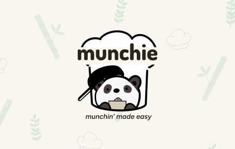
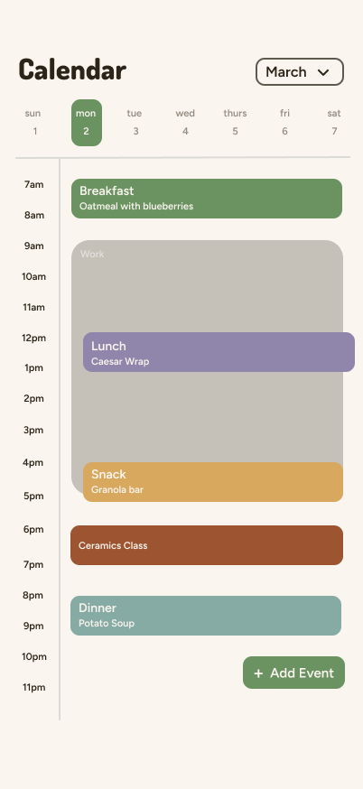
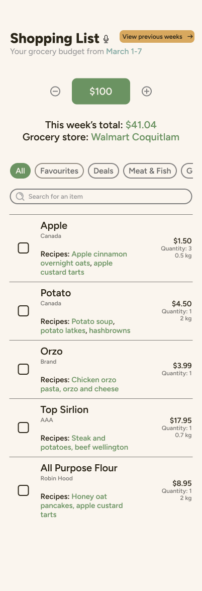
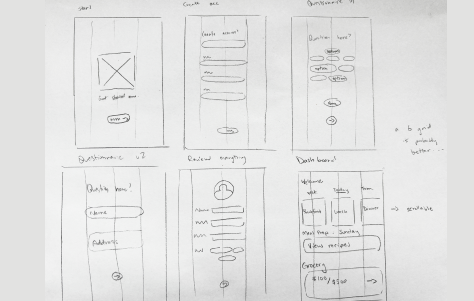
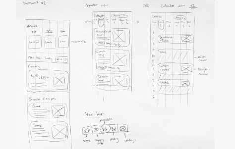
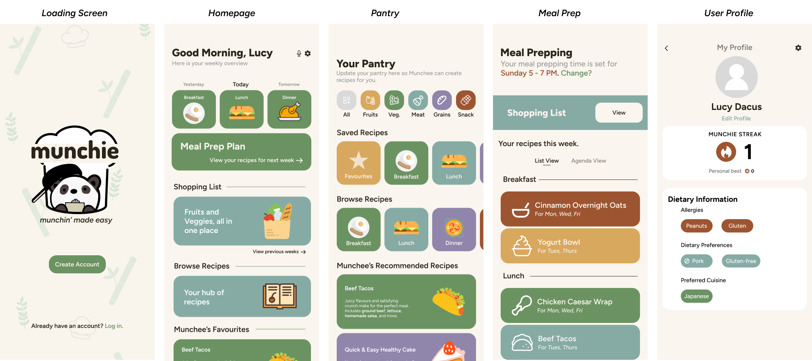

Munchie — UX/UI Design & App Development

Munchie is a mobile application designed to simplify meal planning and grocery shopping by helping users manage their time, budget, and food choices more efficiently. Many individuals—especially students and busy young adults—struggle with rising food costs, limited time, and maintaining a balanced lifestyle. Munchie addresses these challenges by streamlining the process of planning meals, organizing groceries, and preparing food, all within a single platform.
Identifying the Problem
Meal planning and grocery shopping can be time-consuming and overwhelming, particularly for individuals balancing school, work, and personal responsibilities. Users often struggle with: Deciding what to cook Managing grocery budgets Keeping track of ingredients at home Finding time to plan and prepare meals Existing solutions often separate these tasks or require significant manual input, creating friction rather than reducing it. The challenge was to design an app that simplifies these processes into one cohesive system, reducing cognitive load while supporting users’ daily routines and goals.
Design Approach
Munchie was designed with a focus on efficiency, clarity, and flexibility. The interface emphasizes a clean and structured layout using a grid system to organize information in a way that feels intuitive and familiar. To reduce user effort, the app minimizes manual input by generating meal plans and grocery lists based on user data.
A key design decision was to incorporate both touch and voice interactions, allowing users to choose how they interact with the app depending on their context. This makes the experience more accessible and adaptable, especially when users are multitasking.
The design also follows Jakob’s 10 Usability Heuristics, including:
- Match between system and the real world: familiar food-related terminology
- Consistency and standards: patterns aligned with common food andshopping apps
- Aesthetic and minimalist design: clean layouts with clear visual hierarchy
- Recognition rather than recall: helpful icons and prompts to guide user actions
These principles ensured the app remained intuitive while supporting efficient task completion.
Key Features
- Calendar Integration: Syncs with the user’s personal calendar to plan meals and schedule meal prep
- Voice Assistant: Provides recipe suggestions, cooking tips, and price comparisons between stores
- Auto-Generated Shopping List: Creates grocery lists based on selected recipes and user budget
Supporting Features
- Recipe Book: Save and browse recipes
- Meal Prep Page: View planned meals for the upcoming week
- Pantry Tracker: Input available ingredients to generate relevant recipes


Development & Implementation
The final design was developed through iterative prototyping and user feedback. Wireframes and high-fidelity designs were created in Figma, focusing on usability, accessibility, and consistency across screens. User testing and critiques played a key role in refining navigation, layout structure, and feature prioritization. The final prototype reflects a data-driven design process that aligns closely with user needs and behaviours.


Outcome
Munchie delivers a cohesive solution that combines meal planning, grocery management, and cooking assistance into one intuitive platform. The app reduces the stress and time associated with daily food decisions, allowing users to focus on maintaining a balanced lifestyle. By integrating multiple features into a single streamlined experience, Munchie improves efficiency while remaining easy to use and accessible.

Challenges
One of the main challenges was balancing functionality with simplicity. With many potential features, it was important to prioritize what would provide the most value without overwhelming users. Another challenge was designing effective voice interactions, ensuring that commands felt natural while still being easy to learn and remember. Maintaining consistency between touch and voice interactions also required careful design consideration.
Reflection
This project strengthened my skills in UX/UI design, particularly in designing systems that integrate multiple functionalities into a cohesive experience. It highlighted the importance of aligning design decisions with real user needs and using usability principles to guide the process. I also gained experience in designing for different interaction methods, learning how voice interfaces can complement traditional touch-based navigation.
What I’d Do Differently
Looking back, I would incorporate more structured user testing earlier in the design process to better understand user behaviours around meal planning and grocery shopping.
I would also explore expanding the app’s capabilities through:
- AI integration for smarter recommendations
- Chat-based interaction with Munchee
- Advanced personalization and sorting systems
Additionally, implementing a backend system could allow for features like syncing data across devices, improving long-term usability and convenience.